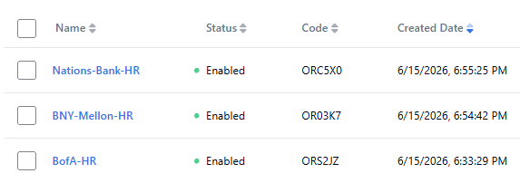
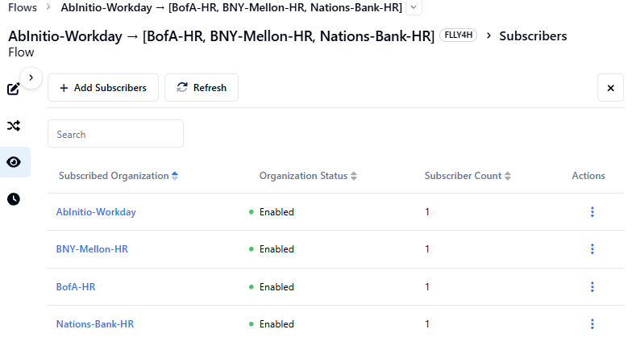
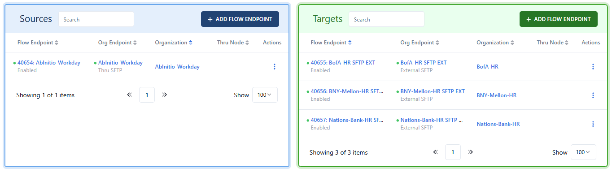

Internal to External: HR & Workday Multi-Destination Fan-Out
Workday SaaS → Ab Initio managed servers → FedEx Net → Bank of America, BNY Mellon, Nations Bank. Runs hourly. All HR files encrypted.
Why This Use Case Matters for the Demo
This is FedEx Freight's highest-frequency automated transfer. The fan-out to multiple banking destinations is exactly where FedEx Net's manual destination management creates the most friction — every new banking partner requires a separate destination configuration in FedEx Net. In Boomi, one flow definition handles the fan-out; adding a new destination is a single endpoint addition with no flow rebuild.
Ab Initio is a third-party managed server service that FedEx Freight uses as an intermediary. Workday (SaaS) pushes HR files into Ab Initio via their managed servers, and Ab Initio pushes those files into FedEx Net. This means the true source is Workday SaaS, but FedEx Net only ever sees Ab Initio as the sender.
Current FedEx Net Setup
How this fan-out flow is configured in FedEx Net — and why the multi-destination setup is painful to maintain.
Current Architecture
SaaS HR System
push HR files
Managed Servers
pushes into FedEx Net
MFT Server
destinations
SFTP
SFTP
SFTP
FedEx Net Configuration for This Flow
| FedEx Net Field | Value for This Flow | Notes |
|---|---|---|
| Sender | Ab Initio managed servers | FedEx Net sees Ab Initio as the sender, not Workday directly |
| Receivers | Bank of America, BNY Mellon, Nations Bank | Each bank requires a separate destination entry in FedEx Net |
| Application Type | HR / payroll data | Encrypted; treated as highest sensitivity classification |
| Encryption | All HR files encrypted at rest | Encryption applied by Workday/Ab Initio before the file reaches FedEx Net |
| Frequency | Hourly (Workday-triggered) | Not a fixed schedule — triggered when Workday job completes |
| File Size Variance | 250 KB to 7 GB | Determined by payroll cycle size; weekly run = much larger than daily delta |
| Destination Mgmt | One destination config per bank | Three separate destination entries, each with its own public key and SFTP URL |
Pain Points in This Flow
- Destination sprawl: Every banking partner = a completely independent destination configuration (SFTP host, path, public key). No bulk setup, no templating.
- No fan-out confirmation: FedEx Net doesn't aggregate delivery status across all destinations. If delivery to BNY Mellon fails while BofA succeeds, there's no single view showing partial failure.
- File size uncertainty: The 250KB–7GB variance means the team can't reliably predict transfer windows. Large files + a system bounce = file stuck mid-transfer, manual restart required.
- No idempotency protection: If Workday pushes a file and then the Ab Initio server retries due to a timeout, FedEx Net may receive the same file twice. No duplicate detection.
Boomi MFT Fan-Out Configuration
Replacing FedEx Net's manual per-destination configuration with a single Boomi flow that fans out to all banking endpoints simultaneously.
Architecture in Boomi MFT
SaaS HR System
push HR files
Managed Servers
pushes into Boomi MFT
Platform
destinations
SFTP
SFTP
SFTP
Each banking org/endpoint stores credentials independently. Adding a 4th bank = add one org + one endpoint. No flow change.
FedEx Net → Boomi MFT: Fan-Out Concept Mapping
| FedEx Net Concept | Boomi MFT Equivalent | Why It's Better |
|---|---|---|
| One destination entry per bank | Target Organizations linked to one flow | Adding a new banking destination doesn't require rebuilding the flow |
| Per-destination public key | SSH key stored per Organization in Boomi Secrets | Each bank's key managed independently; rotation doesn't affect other banks |
| No aggregate delivery status | Per-destination delivery state in Activity Log | Single view shows Delivered/Failed per destination in one screen |
| Manual bounce restart | Automatic retry (built-in, not configurable) | For connection failures, Boomi retries for up to 3 minutes. For mid-transfer errors (e.g. connection interrupted), Boomi retries up to 10 times with exponential backoff (~15–17 min total). If all retries are exhausted, the file is marked Error and an Alert is sent. |
In this fan-out flow, every file received from AbInitio-Workday is delivered to all subscribed target endpoints simultaneously. If you need to route selectively — for example, only certain files go to BofA — each target flow endpoint can be configured with a filename regex filter in the Flow Endpoint Editor. Only files whose names match the filter are delivered to that target. For this workshop no filters are needed; all banks receive every test file.
Configuration Steps for Wednesday Demo
-
1
Create three target Organizations:
BofA-HR,BNY-Mellon-HR,Nations-Bank-HR. Add an External SFTP endpoint for each. Use test/demo SFTP credentials — the actual bank credentials won't be available for the POC.
-
2
Create a source Organization
AbInitio-Workdaywith a Thru SFTP listener endpoint. -
3
In Flow Studio, create a fan-out flow: AbInitio-Workday → [BofA-HR, BNY-Mellon-HR, Nations-Bank-HR]. Subscribe the four newly created organizations and add the relevant endpoints to the source and target.


For each target flow endpoint, click into the Flow Endpoint Editor and configure the following:
- Configuration tab → Target Path: Set the path for each bank endpoint:
BofA-HR→/SHARED/Workshop/BofA-HRBNY-Mellon-HR→/SHARED/Workshop/BNY-Mellon-HRNations-Bank-HR→/SHARED/Workshop/Nations-Bank-HR
- Schedule tab: Change the schedule from the default of 1 hour to 1 minute for this workshop. Click Save Changes.
Once all three target endpoints are configured, click the pulsing blue View and Push Changes button to commit the flow.
- Configuration tab → Target Path: Set the path for each bank endpoint:
-
4
Push a test file (any encrypted file, or a file renamed to match Workday naming conventions). Watch the Activity Log show three parallel delivery lines — one per destination — all sourced from the same file receipt event.
As an additional extra, click into each target flow endpoint and set a filename regex filter in the Flow Endpoint Editor — for example, configure BofA-HR to only accept files matching
.*bofa.*and BNY-Mellon-HR to match.*bny.*. With filters in place, each target will only receive files whose names match its pattern, demonstrating selective fan-out routing from a single source.Test files for this exercise:
-
5
Partial failure demo (time permitting): Break credentials on the BNY Mellon endpoint only. Show that BofA and Nations Bank still deliver successfully while BNY Mellon retries independently. This is the moment that lands hardest.
-
6
New partner in 3 clicks (time permitting): Add a 4th banking org (e.g.,
JPMorgan-HR) and add it to the existing flow. In the Flow Endpoint Editor set the Target Path to/SHARED/Workshop/JPMorgan-HR. Count and call out the clicks — compare to the 17-step FedEx Net process. New partner in less than 17 clicks.
Demo & Proof Points
The moments that differentiate Boomi from FedEx Net's manual fan-out model.
Key Demo Moments
Discovery Questions Still Open
- What is the naming convention for Workday-generated files? (needed for matching/routing logic in Boomi)
- Is there any ordering dependency between the three banking destinations, or are they truly independent fan-out targets?
- What happens today if one bank's SFTP server is unreachable — does FedEx Net retry, or does the file silently fail?